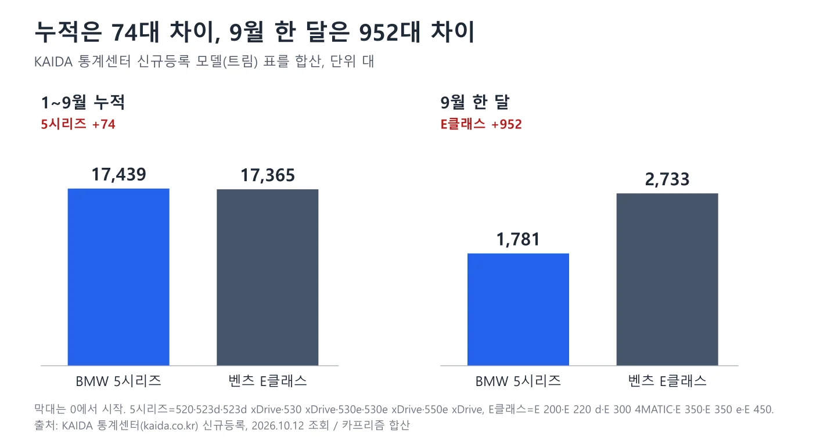
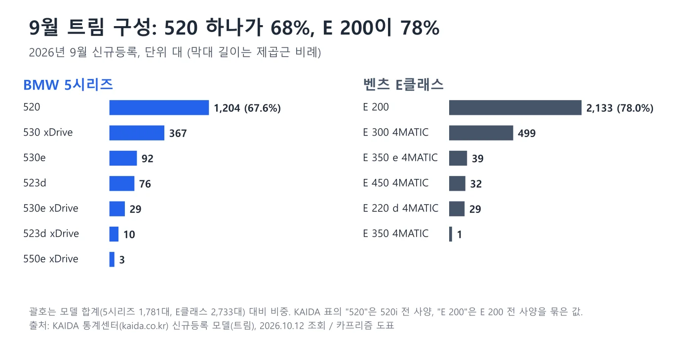
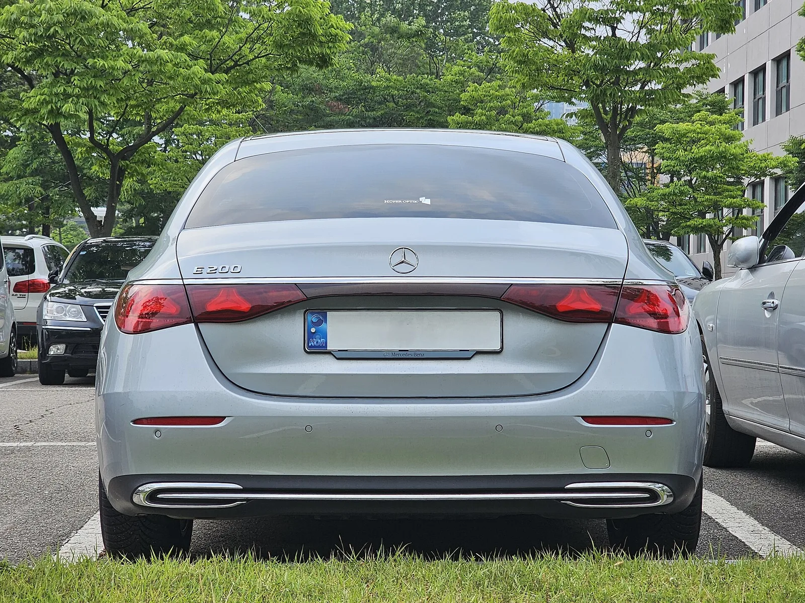
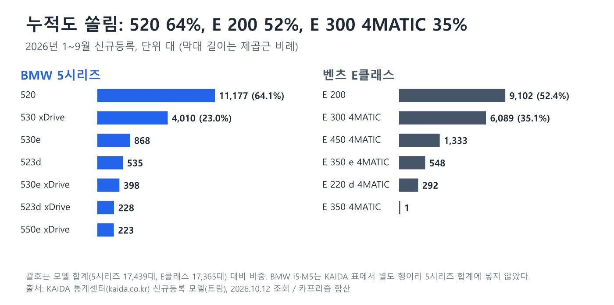
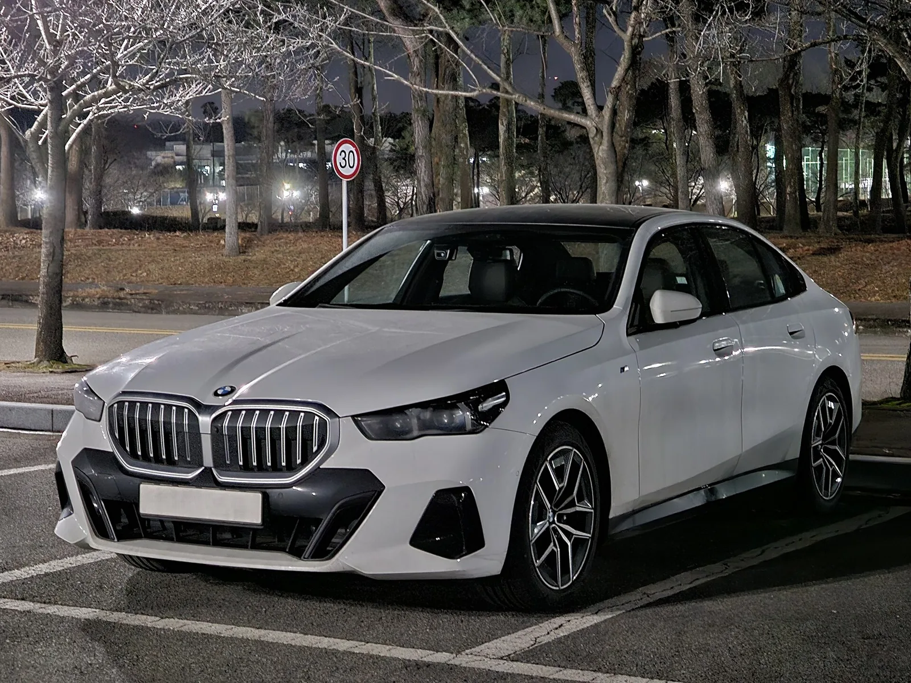
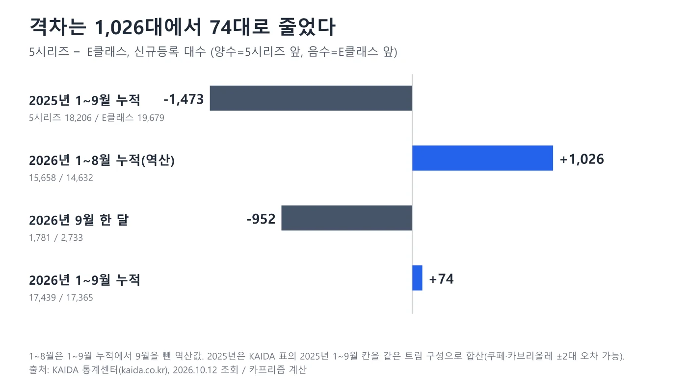
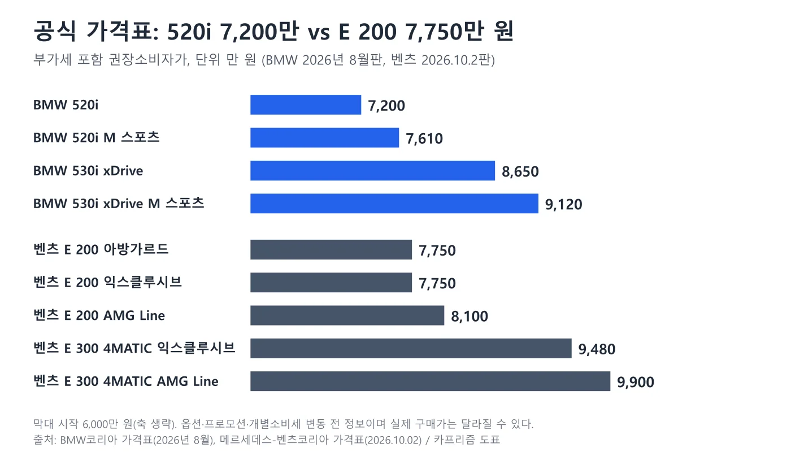
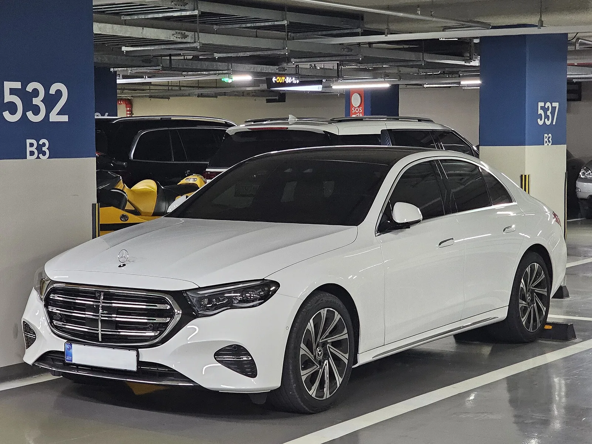
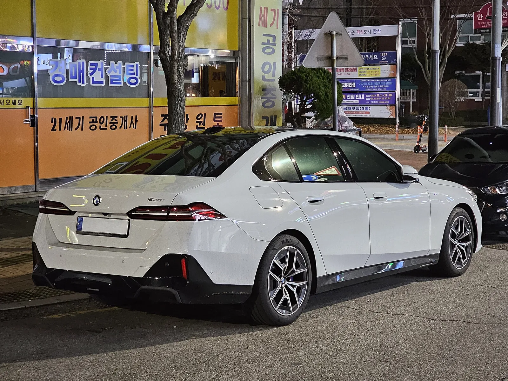

▲ 왼쪽 BMW 5시리즈(G60, 원본 파일명 520i M 스포츠), 오른쪽 벤츠 E클래스(W214, 원본 파일명 E 200 아방가르드). 두 장을 나란히 붙인 사진이며 번호판은 원본에서 가려져 있다 ⓒ Damian B Oh, Wikimedia Commons (CC BY-SA 4.0)
"5시리즈가 74대 앞섰다"와 "E클래스가 952대 앞섰다"는 둘 다 맞는 말이다. 앞의 숫자는 2026년 1~9월 누적(5시리즈 17,439대, E클래스 17,365대), 뒤의 숫자는 9월 한 달(5시리즈 1,781대, E클래스 2,733대)이기 때문이다. 이 글은 한국수입자동차협회(KAIDA) 통계센터가 공개한 2026년 9월 신규등록 '모델(트림)' 표를 2026년 10월 12일에 직접 조회해 5시리즈(520·523d·530 xDrive·530e 등 7개 트림)와 E클래스(E 200·E 300 4MATIC 등 6개 트림)를 합산한 값을 쓴다. KAIDA 표의 '모델(그룹)' 합계는 회원 전용이라 열어 보지 못했지만, 트림을 더한 값이 오토트리뷴·아시아타임즈 보도의 모델 합계(17,439대·17,365대, 9월 1,781대·2,733대)와 정확히 같다. 가격은 BMW코리아 가격표(2026년 8월판, 부가세 포함)와 메르세데스-벤츠코리아 가격표(2026년 10월 2일판)를 열어 확인했다.
정정 안내(2026-10-20) 벤츠 E 200 트림명을 '아방가르드'에서 '익스클루시브'로 바로잡았습니다. 벤츠코리아는 4월 E 200 익스클루시브를 7,660만 원(개별소비세 인하 반영, 보도)에 내놓으며 아방가르드를 대체했고, 7,750만 원은 10월 2일판 자료 값으로 공식 원문은 재확인하지 못했습니다. 도표도 함께 고쳤습니다.
이 글은 두 모델의 숫자 싸움에 집중한다. 8월 수입차 시장 전체 구도는 8월 수입차 시장 기사, 9월 BYD 등록은 BYD 9월 등록 기사, 중고차 감가는 E클래스·5시리즈·A6 감가율 기사와 E클래스 중고가 하락 기사에서 다뤘다.
1. 74대와 952대 — 무엇을 어떻게 셌나
KAIDA 신규등록은 한 달 동안 새로 등록된 대수라서 월간 값과 누적 값을 섞으면 결론이 달라진다. 아래 표는 같은 KAIDA 표에서 뽑은 숫자를 기간별로 나란히 놓은 것이다. 8월과 1~8월은 KAIDA 표의 8월 칸과 1~9월 누적에서 9월을 뺀 역산값이다.
| 기간 | 5시리즈 | E클래스 | 격차 |
|---|---|---|---|
| 2026년 9월 | 1,781 | 2,733 | E클래스 +952 |
| 2026년 8월 | 1,902 | 1,404 | 5시리즈 +498 |
| 2026년 1~8월(역산) | 15,658 | 14,632 | 5시리즈 +1,026 |
| 2026년 1~9월 | 17,439 | 17,365 | 5시리즈 +74 |
| 2025년 1~9월 | 18,206 | 19,679 | E클래스 +1,473 |

▲ 누적(왼쪽)은 사실상 동률이고 9월 한 달(오른쪽)은 E클래스가 앞선다 ⓒ 카프리즘 제작 도표, 출처 KAIDA 통계센터
2025년 1~9월에는 E클래스가 1,473대 앞섰다. 올해는 두 모델 모두 줄었지만 E클래스(19,679대→17,365대, 11.8% 감소)가 5시리즈(18,206대→17,439대, 4.2% 감소)보다 더 크게 줄어 누적 순위가 5시리즈 쪽으로 넘어왔다. 2025년 값은 KAIDA 표의 2025년 1~9월 칸을 같은 트림 구성으로 합산한 것이어서 E클래스 쿠페·카브리올레(해당 칸 2대) 포함 여부에 따라 두어 대 차이가 날 수 있다.
트림 합계가 모델 합계와 정확히 맞는지도 확인했다. 9월 5시리즈는 520 1,204 + 530 xDrive 367 + 530e 92 + 523d 76 + 530e xDrive 29 + 523d xDrive 10 + 550e xDrive 3 = 1,781대, E클래스는 E 200 2,133 + E 300 4MATIC 499 + E 350 e 4MATIC 39 + E 450 4MATIC 32 + E 220 d 4MATIC 29 + E 350 4MATIC 1 = 2,733대다. KAIDA 표에서 BMW i5(9월 218대)와 M5(37대)는 별도 행이고 AMG E 53 하이브리드(16대)도 E클래스 합계에 들어 있지 않다. 이 글의 '5시리즈'와 'E클래스'는 보도 수치와 같은 범위다.
KAIDA 표는 KAIDA 통계센터 신규등록 바로가기에서 확인 가능하다. 기간(2026년 9월)과 '모델(트림)'·'월별요약'을 고르면 같은 표가 나온다.
2. 9월 한 달 — E 200 한 트림이 2,133대
9월 베스트셀링 트림 3위는 벤츠 E 200(2,133대), 4위는 BMW 520(1,204대)이다. 1~2위는 테슬라 모델 Y L(8,690대)과 모델 Y 프리미엄(2,467대)이다. 5시리즈 중 두 번째로 많이 팔린 530 xDrive(367대)보다 E 200 한 트림이 5.8배 많다. 5시리즈는 520이 67.6%를 차지하는 반면 E클래스는 E 200이 78.0%, E 300 4MATIC까지 더하면 96.3%(2,632대)다.

▲ 9월 트림 구성. 두 모델 모두 가솔린 2.0 주력 트림에 쏠려 있다 ⓒ 카프리즘 제작 도표, 출처 KAIDA 통계센터
| 트림 | 2026.9 | 2026.8 | 전월 대비 | 2025.9 |
|---|---|---|---|---|
| BMW 520 | 1,204 | 1,270 | -5.2% | 1,539 |
| BMW 530 xDrive | 367 | 407 | -9.8% | 389 |
| BMW 530e·530e xDrive | 121 | 116 | +4.3% | 181 |
| BMW 523d·523d xDrive | 86 | 100 | -14.0% | 87 |
| BMW 550e xDrive | 3 | 9 | -66.7% | 0 |
| BMW 5시리즈 합계 | 1,781 | 1,902 | -6.4% | 2,196 |
| 벤츠 E 200 | 2,133 | 756 | +182.1% | 1,981 |
| 벤츠 E 300 4MATIC | 499 | 592 | -15.7% | 984 |
| 벤츠 E 350 e·E 450·E 220 d·E 350 | 101 | 56 | +80.4% | 273 |
| 벤츠 E클래스 합계 | 2,733 | 1,404 | +94.7% | 3,238 |
전월 대비로 5시리즈는 6.4% 줄었고 E클래스는 94.7% 늘었다. 전년 동월 대비로는 5시리즈가 2,196대에서 1,781대로 18.9%, E클래스가 3,238대에서 2,733대로 15.6% 줄어 둘 다 지난해 9월보다 못하다. 즉 9월 E클래스의 우세는 '올해 들어 가장 잘 팔렸다'기보다 8월이 유난히 낮았다가 평소 수준으로 돌아온 쪽에 가깝다. E 200의 9월 2,133대는 지난해 9월(1,981대)보다 7.7% 많지만, 8월(756대)보다는 2.8배다.

▲ 벤츠 E클래스(W214) 후면. 트렁크 리드의 E 200 배지가 보이는 차량이다. 번호판은 원본에서 가려져 있다 ⓒ Damian B Oh, Wikimedia Commons (CC BY-SA 4.0)
3. 1~9월 누적 — 520이 11,177대, E 200이 9,102대
누적에서는 5시리즈가 한 트림에 더 몰려 있다. 520이 11,177대로 5시리즈의 64.1%이고 530 xDrive가 4,010대(23.0%)다. E클래스는 E 200 9,102대(52.4%), E 300 4MATIC 6,089대(35.1%)로 두 트림이 나눠 가진다. 520 한 트림(11,177대)은 E 200(9,102대)보다 2,075대 많지만, E 300 4MATIC이 530 xDrive보다 2,079대 더 많아 모델 합계가 거의 같아진다. 5시리즈는 저렴한 520으로, E클래스는 상위 E 300 4MATIC으로 숫자를 채우는 구조다.

▲ 1~9월 트림 누적. 520(64.1%)과 E 200(52.4%)이 각 모델의 중심이다 ⓒ 카프리즘 제작 도표, 출처 KAIDA 통계센터
| 트림 | 2026 누적 | 2025 누적 | 증감 |
|---|---|---|---|
| BMW 520 | 11,177 | 11,100 | +0.7% |
| BMW 530 xDrive | 4,010 | 4,215 | -4.9% |
| BMW 530e·530e xDrive | 1,266 | 2,037 | -37.9% |
| BMW 523d·523d xDrive | 763 | 757 | +0.8% |
| BMW 550e xDrive | 223 | 97 | +129.9% |
| BMW 5시리즈 합계 | 17,439 | 18,206 | -4.2% |
| 벤츠 E 200 | 9,102 | 10,611 | -14.2% |
| 벤츠 E 300 4MATIC | 6,089 | 6,596 | -7.7% |
| 벤츠 E 450 4MATIC | 1,333 | 726 | +83.6% |
| 벤츠 E 350 e 4MATIC | 548 | 932 | -41.2% |
| 벤츠 E 220 d 4MATIC | 292 | 810 | -64.0% |
| 벤츠 E클래스 합계 | 17,365 | 19,679 | -11.8% |
5시리즈의 520은 지난해 대비 0.7% 늘어 거의 그대로이고, 줄어든 쪽은 플러그인 하이브리드 530e 계열(2,037대→1,266대)이다. E클래스는 주력 E 200이 14.2% 줄었고 디젤 E 220 d 4MATIC(810대→292대)과 E 350 e 4MATIC도 크게 줄었다. 반대로 E 450 4MATIC은 1,333대로 83.6% 늘었다. 두 모델의 누적 차이 74대는 이런 트림별 증감이 합쳐진 결과다.

▲ BMW 5시리즈(G60) 전면. 키드니 그릴 테두리 조명이 켜지는 신형이다. 원본 파일명에는 520i M 스포츠로 적혀 있고 번호판은 가려져 있다 ⓒ Damian B Oh, Wikimedia Commons (CC BY-SA 4.0)
4. 1,026대 앞서던 격차가 한 달에 74대로 — E 200이 만든 반전
8월까지 5시리즈는 E클래스를 1,026대 앞서 있었다. 9월에 E클래스가 952대를 더 팔면서 격차가 74대로 줄었다. 트림별로 보면 9월 변화의 대부분은 E 200이다. E 200은 8월 756대에서 9월 2,133대로 1,377대 늘었고, 같은 기간 520은 1,270대에서 1,204대로 66대 줄었다. 나머지 트림의 변화는 합쳐도 이 차이를 설명하지 못한다.

▲ 5시리즈와 E클래스의 격차 추이. 2025년 1~9월에는 E클래스가 1,473대 앞섰다 ⓒ 카프리즘 제작 도표, 출처 KAIDA 통계센터
E 200의 1~8월 월평균은 871대(9,102대에서 9월분을 뺀 6,969대를 8로 나눈 값)인데 9월은 2,133대로 평균의 2.4배다. 520은 1~8월 월평균 1,247대에 9월 1,204대로 평균 수준이다. 그래서 이번 역전은 520이 부진해서라기보다 E 200이 평소보다 많이 등록된 달이었다는 쪽에 가깝다. 왜 많이 등록됐는지는 KAIDA 표에 없고 확인하지 못했다. KAIDA는 9월 증가 요인으로 일부 브랜드의 물량 확보, 신차 출시, 적극적인 마케팅을 꼽았다고 보도됐는데 특정 모델에 대한 설명은 아니다. 올해 남은 3개월(10~12월)도 격차가 74대에 불과하므로 한 달 등록 몇백 대에 누적 1위가 바뀔 수 있다.
5. 공식 가격표로 본 두 모델 — 같은 급 트림끼리 490만~850만 원 차이
판매량 이야기에서 가격을 빼기 어렵다. BMW코리아 가격표(2026년 8월 기준)와 메르세데스-벤츠코리아 가격표(2026년 10월 2일 기준)의 판매가를 나란히 놓았다. 두 가격표의 기준일이 달라 같은 날 비교는 아니고, BMW 가격표는 부가세 포함이라고 적혀 있다. 벤츠 가격표는 '일반 소비자 판매 가격표'로 세금 문구를 확인하지 못했다. 공통으로 옵션·프로모션을 뺀 가격표 가격이다.
| 5시리즈 | 가격 | E클래스 | 가격 | 차이 |
|---|---|---|---|---|
| 520i | 7,200 | E 200 익스클루시브 | 7,750 | E클래스 +550 |
| 520i M 스포츠 | 7,610 | E 200 AMG Line | 8,100 | E클래스 +490 |
| 530i xDrive | 8,650 | E 300 4MATIC 익스클루시브 | 9,480 | E클래스 +830 |
| 530i xDrive M 스포츠 | 9,120 | E 300 4MATIC AMG Line | 9,900 | E클래스 +780 |
| 530e | 9,150 | E 350 e 4MATIC 익스클루시브 | 10,000 | E클래스 +850 |

▲ 공식 가격표 가격. 같은 급 트림끼리 E클래스가 490만~850만 원 높다 ⓒ 카프리즘 제작 도표, 출처 BMW코리아·메르세데스-벤츠코리아 가격표
E 200의 현행 엔트리 트림은 익스클루시브다. 벤츠코리아는 2026년 4월 E 200 익스클루시브를 내놓으며 기존 E 200 아방가르드를 대체했고, 당시 출시가는 개별소비세 인하분을 반영한 7,660만 원(부가세 포함)으로 보도됐다(헤럴드경제). 표의 7,750만 원은 10월 2일판 자료에서 확인한 값이며, 벤츠코리아 공식 가격표 원문으로는 이번에 재확인하지 못했으니 구매 전 공식 가격표를 확인해야 한다. AMG Line은 8,100만 원이다. E 300 4MATIC 아방가르드는 현행 가격표에 없다. BMW 가격표의 520i 7,200만 원은 KAIDA 표에서 520이라는 한 줄로 묶이는 520i·520i M 스포츠 중 낮은 쪽이다. KAIDA 표의 '가격' 칸에는 520이 7,610만 원(520i M 스포츠 가격표와 같음), E 200이 7,750만 원으로 적혀 있어, 판매량 표의 '520'에는 가격이 다른 두 사양이 섞여 있다. 8월판과 10월판 사이에 가격이 바뀌었을 수 있고 BMW 9~10월판은 찾지 못했다. 또 BMW코리아 9월 프로모션처럼 별도 할인이 붙으면 실제 가격은 달라진다. 구매 비용과 감가는 감가율 비교 기사를 함께 보면 된다.

▲ 벤츠 E클래스(W214) 전면. 원본 파일명에는 E 300 4MATIC 익스클루시브로 적혀 있고 번호판은 가려져 있다 ⓒ Damian B Oh, Wikimedia Commons (CC BY-SA 4.0)
6. 파워트레인과 구성 — 공식 출력 수치는 열지 못했다
KAIDA 표의 배기량 칸으로는 520이 1,998cc, 530 xDrive가 1,998cc, E 200이 1,999cc, E 300 4MATIC이 1,999cc로 모두 2.0리터급이다. 차이는 구동 방식이다. 530 xDrive와 E 300 4MATIC은 이름에 네 바퀴 굴림(xDrive·4MATIC)이 붙는 상위 트림이다. 트림별 최고출력·토크·연비·마일드 하이브리드 구성은 BMW코리아와 벤츠코리아 공식 제원 페이지를 열지 못해 이 글에 싣지 않았다. 2차 자료에서 520i 190마력, E 200 204마력, E 300 4MATIC 258마력이 보이지만 공식 자료로 확인하지 못했으므로 구매 전 공식 제원표로 확인해야 한다.
선택지는 두 브랜드가 다르게 갈린다. 5시리즈는 디젤 523d·523d xDrive, 플러그인 530e·530e xDrive, 530 xDrive, 550e xDrive까지 7개 트림이 집계되고 전기차 i5는 별도 모델로 9월 218대(i5 eDrive40 174대, xDrive40 37대, M60 xDrive 7대), 누적 2,382대가 따로 등록됐다. E클래스는 E 200과 E 300 4MATIC이 사실상 전부여서 선택지가 단순하다. 같은 숫자 74대 차이 안에 i5를 넣느냐 마느냐로 비교 대상이 달라진다는 점도 알아 둘 만하다. 이 글은 KAIDA의 모델 구분을 따라 i5를 제외했다.

▲ BMW 5시리즈(G60) 후면. 원본 파일명에는 520i M 스포츠로 적혀 있고 번호판은 가려져 있다 ⓒ Damian B Oh, Wikimedia Commons (CC BY-SA 4.0)
7. 시장 속의 두 모델 — BMW 6,066대·벤츠 5,477대 안에서의 비중
9월 수입 승용차 신규등록은 34,904대(전월 대비 17.1%·전년 동월 대비 6.3% 증가), 1~9월은 279,729대로 보도됐다. 브랜드 순위는 테슬라 12,372대, BMW 6,066대, 벤츠 5,477대, BYD 2,614대 순이다. 5시리즈와 E클래스를 더한 4,514대는 9월 전체의 12.9%이고 누적 34,804대는 12.4%다.
| 기준 | BMW 5시리즈 | 벤츠 E클래스 |
|---|---|---|
| 9월 브랜드 등록 | 6,066대 중 1,781대(29.4%) | 5,477대 중 2,733대(49.9%) |
| 1~9월 브랜드 누적 | 57,929대 중 17,439대(30.1%) | 43,249대 중 17,365대(40.2%) |
| 브랜드 9월 전월 대비 | -1.8%(8월 6,180대) | +35.7%(8월 4,037대) |
| 브랜드 1~9월 전년 대비 | +0.2% | -10.4% |
같은 17,000대대 판매라도 벤츠에서는 E클래스가 누적의 40.2%이고 BMW에서는 5시리즈가 30.1%다. 9월 벤츠 브랜드 등록의 절반(49.9%)이 E클래스였다. 테슬라 12,372대는 BMW와 벤츠를 합친 11,543대보다 829대 많다. 5시리즈와 E클래스의 74대 접전은 수입 승용 시장 전체에서 두 독일 브랜드의 중형 세단 경쟁이 여전하다는 뜻이지만, 베스트셀링 1~2위는 테슬라 모델 Y 계열이다. 연료별로는 전기 18,181대(52.1%), 하이브리드 13,620대(39.0%), 가솔린 2,857대(8.2%), 디젤 246대(0.7%)로 보도됐다. 5시리즈와 E클래스 주력 트림이 연료 구분에서 어디에 잡히는지는 KAIDA 표만으로 확인하지 못했다. 8월 5시리즈(1,902대)가 모델 2위에 오른 것은 8월 수입차 시장 기사에서, BYD가 4위(2,614대)에 오른 9월 흐름은 BYD 9월 등록 기사에서 정리했다.
📍 이 글의 숫자 기준
모든 판매 대수는 KAIDA 통계센터 신규등록 '모델(트림)' 표(2026년 9월·1~9월 칸)를 2026년 10월 12일에 조회한 값이고, 5시리즈·E클래스 합계와 격차·비중·증감률은 카프리즘이 트림을 더하거나 나눠 계산했다. 합계는 오토트리뷴(박성한, 10월 11일)·아시아타임즈(10월 6일) 보도의 모델 수치, 시장 전체 34,904대·279,729대와 브랜드 순위는 뉴스핌·카가이 보도와 같다. KAIDA 수치는 이후 정정될 수 있다.
8. 사려는 사람이 볼 것
체크포인트: 판매량 순위가 내 선택에 주는 의미
- 가격 차이부터 본다: 같은 급 트림끼리 E클래스가 가격표 기준 490만~850만 원 비싸다. 판매량 1위 여부가 가격 경쟁력을 뜻하지는 않는다
- 프로모션·재고를 확인한다: 가격표 가격과 실제 계약가는 다르다. 두 브랜드 모두 월별 프로모션이 따로 있고 이 글은 반영하지 않았다
- 트림 구성을 비교한다: 520과 E 200처럼 기본 트림이 잘 팔리는 것은 맞지만, 530 xDrive와 E 300 4MATIC 같은 상위 트림 가격 차이(830만 원)가 더 크다
- 중고 가치는 따로 본다: 신차 판매량이 곧 감가 방어력은 아니다. E클래스 중고가 하락 기사와 감가율 비교 기사를 함께 본다
- 월간 변동이 크다: E 200은 8월 756대에서 9월 2,133대로 뛰었다. 한 달 순위만으로 모델 흐름을 판단하지 않는다
가격표는 BMW코리아 5시리즈 가격 바로가기와 벤츠코리아 가격표 바로가기에서 확인 가능하다. 두 페이지는 매월 갱신될 수 있다.
9. 확인하지 못한 것과 단정하지 않은 것
| 항목 | 상태 |
|---|---|
| KAIDA 보도자료 원문 | 찾지 못했다. 대신 KAIDA 통계센터 공개 표를 직접 조회했다 |
| KAIDA 모델(그룹) 표 | 회원 전용이라 열지 못했다. 트림 합계가 보도 수치와 일치함을 확인했다 |
| 9월 E 200 급증의 이유 | KAIDA 표에 없다. 물량·프로모션·출시 시점 등은 확인하지 못했다 |
| BMW 9~10월판 가격표 | 8월판까지 확인했다. 9월 프로모션은 반영하지 않았다 |
| 벤츠 가격표의 세금·부가세 문구 | 가격표에서 확인하지 못했다 |
| 트림별 공식 출력·연비 | BMW코리아·벤츠코리아 공식 제원 페이지를 열지 못했다 |
| 2025년 1~9월 E클래스 합계 | 쿠페·카브리올레 2대 포함 여부에 따라 ±2대 오차가 있다 |
10. 요약
2026년 1~9월 누적은 BMW 5시리즈 17,439대, 벤츠 E클래스 17,365대로 5시리즈가 74대 앞서지만, 9월 한 달은 E클래스 2,733대, 5시리즈 1,781대로 E클래스가 952대 앞섰다(KAIDA 통계센터 트림 합산, 보도 수치와 일치). 8월까지 1,026대였던 격차가 한 달에 74대로 줄었다.
9월 격차의 대부분은 E 200이 8월 756대에서 9월 2,133대로 뛴 데서 나왔다. 520은 1,204대로 평균 수준이다. 두 모델 모두 지난해 9월·1~9월보다 줄었고, 누적에서 E클래스(-11.8%)가 5시리즈(-4.2%)보다 더 줄었다.
공식 가격표 기준으로 520i 7,200만 원 대 E 200 익스클루시브 7,750만 원(4월 출시가 7,660만 원, 아방가르드 대체), 530i xDrive 8,650만 원 대 E 300 4MATIC 익스클루시브 9,480만 원이다. 가격표 기준일은 BMW 8월판, 벤츠 10월 2일판으로 다르고, 공식 출력 수치와 E 200 급증의 이유는 확인하지 못했다.